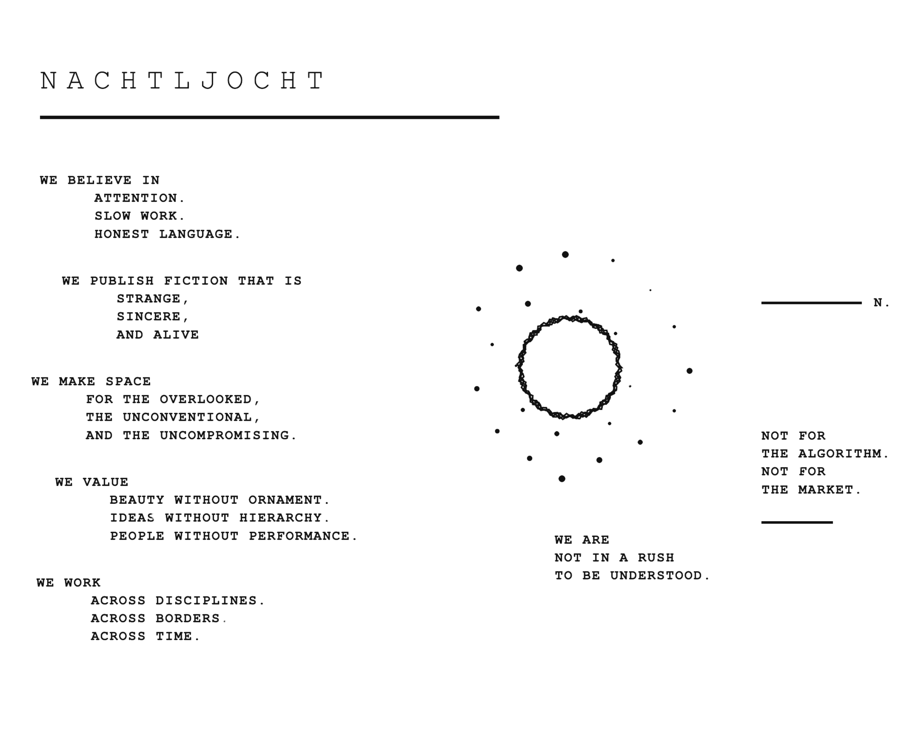
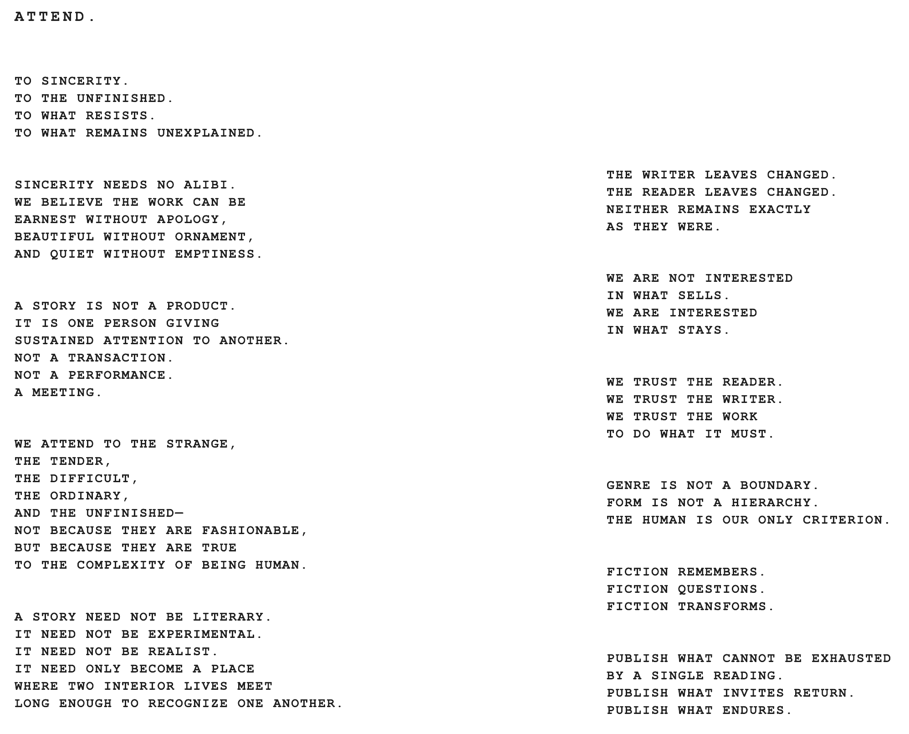

nachtljocht
nachtljocht is a quarterly literary journal devoted to fiction and short plays.
Each issue brings together work from emerging and established writers across genres, forms, and styles, with an emphasis on fiction that is emotionally precise, formally confident, and unafraid of strangeness. The journal has no house style and no interest in literary gatekeeping; a quiet domestic piece may appear beside speculative fiction, horror, historical romance, or surrealism if the work feels necessary and fully realized.
Rather than chasing trends or cultural performance, nachtljocht is interested in stories with interiority, atmosphere, conviction, and artistic intent. nachtljocht especially values voices working outside conventional literary pathways and seeks to create space for fiction that might otherwise go overlooked.
Designed as a substantial quarterly volume rather than a disposable magazine, each issue of nachtljocht is intended to be read, collected, and returned to over time.
nachtljocht was founded, is edited, and currently entirely funded by Ys Goldt.
What we're looking for: Good writing. Work that knows what it's doing. We don't care if it's realist, speculative, horror, romance, erotica, satire, or some genre that doesn't have a name yet. Send your best work, not your safest.
What we take: Previously unpublished fiction and plays, 3,000-12,000 words. No genre restrictions. No content restrictions.
"Previously unpublished" includes personal blogs, newsletters, social media posts, public forums, and any work that has already appeared online in a publicly accessible form.
Upcoming deadlines:
- Volume 2 (November 2026) - submission period closes 31 July 2026 - reading period 1-31 August
- Volume 3 (February 2027) - submission period opens 1 October 2026
Formatting Requirements
Submit your manuscript as a PDF. Include your name and the title of the work on the first page.
Use 12pt Times New Roman, double spacing, 2.54 cm (1 inch) margins, and page numbers throughout.
For fiction, indicate scene breaks with a centred ***.
Multiple submissions: Up to two stories at a time, one per form, please. Wait for a response before submitting again for future calls.
Simultaneous submissions: Fine by us. Just let us know immediately if your work is accepted elsewhere.
Editing: Accepted works may be subject to minor copyediting. Any substantial editorial changes will be made only with the author's approval.
Rights: First serial rights only. We get to publish it first and keep it in our archive. Everything else stays yours. You're free to republish anywhere after it appears in nachtljocht.
Payment: We pay authors 15$ per accepted piece, payment at time of publication. Contributors will also receive a complimentary copy of the print edition. (Please note at the current time with shipping costs as high as they are and nachtljocht being a fully self funded endeavour, we regret that we cannot ship complimentary copies to those residing outside of the USA, that being said, we are trying to find a solution asap!)
AI Policy: nachtljocht doesn't publish work written by AI. We don't use AI either. Your story gets read by a real person, start to finish, every time. We're not going to hassle you about this, just be honest with us. The work should be yours.
How to submit: Use the form below. Accepted files are .doc, .docx, or .pdf. No need to pitch, summarize, or include a bio.
First Serial Rights - An Explanation
By submitting your work, you agree to grant us First Serial Rights if it is accepted. This means we acquire the right to be the first to publish the piece, either in print or online.
You retain full ownership of your work.
We ask that the piece not be published elsewhere before it appears with us.
Once published, you are free to republish it, though we appreciate a note acknowledging its first appearance here.


For any inquiries outside of submissions, send a message via the form below.

